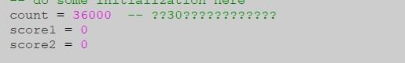
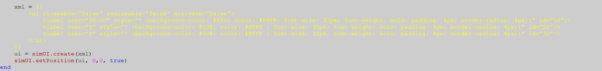
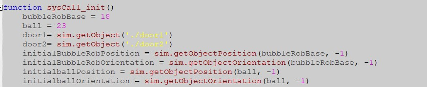
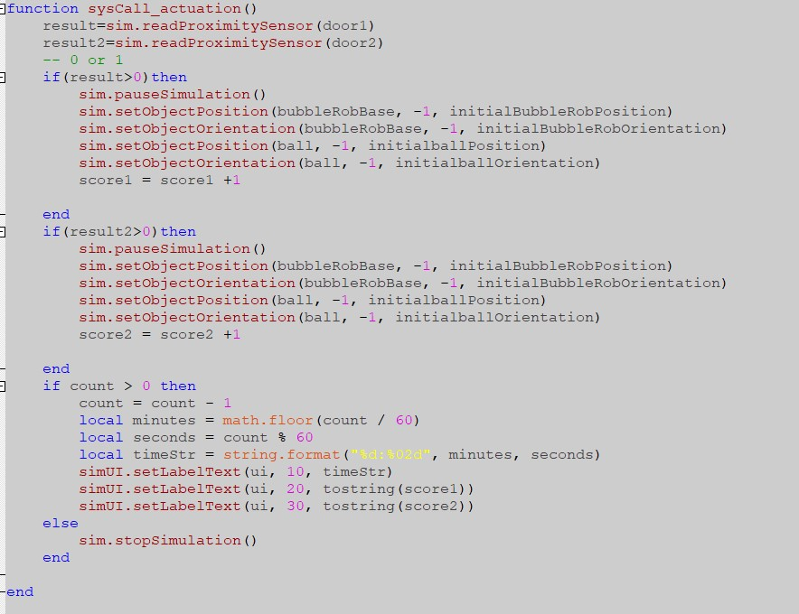

ag15 <<
Previous Next >> ag20
ag17
組員:41023120呂昕叡、41023118吳政憲
pj1倉儲:https://github.com/mdecd2023/2a-pj1ag17
pj1網頁:https://mdecd2023.github.io/2a-pj1ag17/content/football.html
製作足球場 onshape檔案
CoppeliaSim檔案
導入主程式和記分板

這段代碼用於進行一些初始化操作。具體來說，我們將一個名為 count 的變量初始化為 18000，這個變量用於存儲倒計時的剩餘時間，單位為秒。我們還將 score1 和 score2 變量初始化為 0，這兩個變量用於表示兩個玩家的得分。

這段程式碼是用來建立一個使用者介面(UI)，讓使用者可以看到遊戲時間和兩方的得分。程式中使用了XML格式的字串來定義介面的樣式，其中包括了三個標籤(Label)，分別是時間、玩家1得分和玩家2得分，以及對應的位置和樣式設定。


bubbleRobBase=18 ball=23這是用程式測出來的距離 sysCall_init() 函數用於初始化仿真環境和一些變量，而 sysCall_actuation() 函數用於執行機器人的運動和動作，以及更新計時器和得分標籤的顯示。 sensor1 和 sensor2 變量是用來存儲兩個傳感器的句柄，這些傳感器可能被機器人用來檢測周圍環境。bubbleRobBase 變量存儲了機器人的基座句柄。ball 變量存儲了一個球的句柄。initialBubbleRobPosition 和 initialBubbleRobOrientation 分別是機器人基座的初始位置和方向。initialballPosition 和 initialballOrientation 分別是球的初始位置和方向。
雙人對戰
查詢IP位址
- 按下Windows + R 開啟「執行」視窗後，輸入「cmd」後點選確定。
- 系統自動開啟「命令提示字元」視窗，接下來輸入「ipconfig /all」並按Enter。
- 在「IPv4」位址後面就是電腦目前的IP位址。
心得:我們因為實在不知道怎麼打記分板的程式所以參考了同學的程式,結果根本不知道要如何更改本來只有一條程式錯結果越用越多錯,所以直接去請教了同學,經過他的解答和解或知道了原來要測接腳,每個名子要打對不然根本偵測不到還有接腳要對,且了解到使用XML創建UI界面，設置計時器和時間到會停止模擬的功能,雖然過程並不美好但還是有去解決,感謝其他同學的幫助。
ag15 <<
Previous Next >> ag20